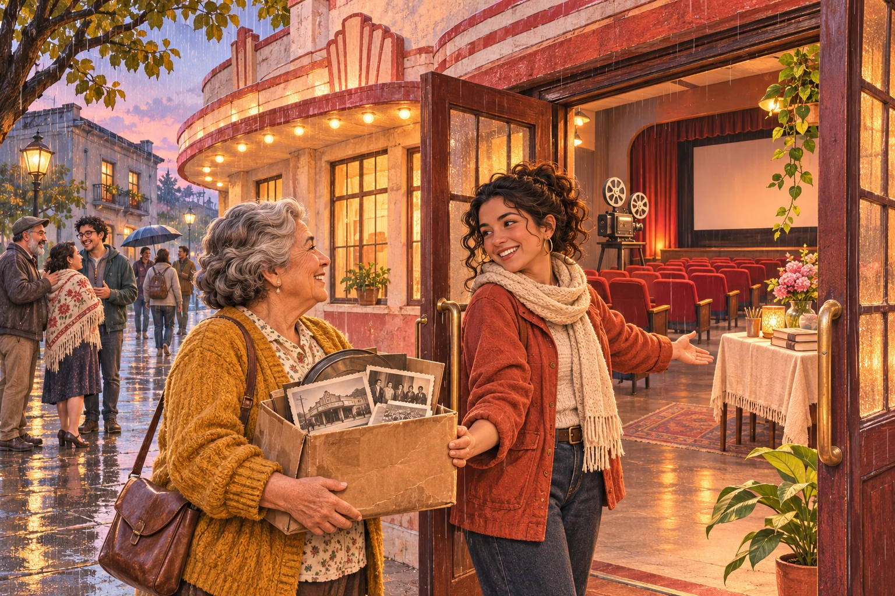

Indefinido
Olayı tamamlanmış bir bütün olarak sunar. Bu anlatıda olaylar art arda gelir.
DERS İÇİ ETKİNLİK · (11+12) A2.2
Bir olay, o anın hikâyesi ve ondan önce olanlar. Pretérito pluscuamperfecto
01 / AYNI YER, ÜÇ BAKIŞ
Görselleri incele. Hangileri hikâyeyi ilerletiyor, hangileri ortamı anlatıyor, hangileri daha öncesine götürüyor? Kelimelere dokunarak anlamlarını açabilirsin.
Olayı tamamlanmış bir bütün olarak sunar. Bu anlatıda olaylar art arda gelir.
O andaki ortamı, alışkanlığı veya sürmekte olan durumu gösterir.
Geçmişteki bir referans anından önce tamamlanan eyleme döner.
Şimdi geçmişteki iki olayın yerini değiştirelim.
02 / İKİ CÜMLE, FARKLI SIRA
Her satırın ilk vurgulu eylemini, ikinci öbekteki referans olayla karşılaştır. Önce mi, sonra mı gerçekleşti? İki satırı da seçip Comprobar düğmesine bas. Her 🔒 yalnızca kendi cevabını açar.
Olayların sırasını bir hikâyenin içinde takip edelim.
03 / LEE Y DESCUBRE

Metni oku ve her soruda A, B veya C’yi seç. Bir cümlenin üzerine gelince anlamlı öbekleri birlikte renklenir. Kelimeye dokununca Türkçe–İngilizce anlamı, sözlük biçimi ve cümledeki görevi açılır.
COMPRENDE LA HISTORIA
Bir olayı anlatırken geçmişin hangi noktasında durduğuna bak. ✨